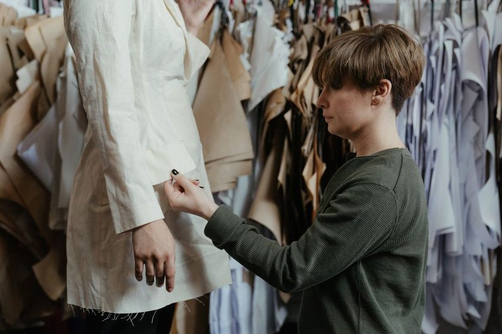

Why Seam Allowance Consistency Matters More Than Seam Allowance Size
A pattern with three different seam allowances hidden across its pieces causes more fitting trouble than any single allowance width does.

Pattern pieces laid out with allowance lines walked and labeled before anything touches the fabric.
A friend brought me a shirt she had made twice from the same pattern. Both times the yoke came out narrow, and both times she blamed her sewing. When we laid the tissue pieces on the table and measured, the answer was sitting right there in ink: the fronts carried a 5/8 inch allowance, the yoke carried 3/8, and the sleeve carried something that measured closer to a centimeter. Nobody had sewn anything wrong. The pattern had simply been drafted, or graded, or traced, by more than one hand, and the widths never got reconciled. Every seam she stitched at 5/8 out of habit ate into pieces that had been drawn expecting less.
Width Is Preference. Mixing Widths Is a Measurement Change.
People argue about seam allowance width the way they argue about coffee. Half an inch is efficient. Five eighths gives you room to let out. Three eighths is easier on a curve. A centimeter is what a lot of the world already uses. All of these work. None of them is more correct than the others, and the finished garment cannot tell which one you chose, because the finished garment is defined by the stitching line, not the cutting line.
What the garment absolutely can tell is whether you were consistent. Every millimeter of mismatch between the allowance drawn on the piece and the allowance you actually stitch becomes a change to the finished measurement, doubled at each seam, and multiplied by the number of vertical seams in the garment. A shirt with two side seams, two armhole seams, and a center back seam gives you ten separate opportunities for a quarter inch to disappear. Stitch that shirt at 5/8 when the pieces were drawn for 3/8, and you have removed something in the neighborhood of two and a half inches from a garment that never had it to spare.
That is the whole argument. The width is yours to pick. The mixing is what quietly rewrites the numbers you spent an afternoon establishing when you first built the block, and it does it without ever announcing itself.
Nobody notices the allowance that was correct. Everybody notices the sleeve that will not set, and almost nobody traces it back to a cutting line drawn on a different day.
Auditing a Pattern Before You Cut
Twenty minutes of measuring on the table saves a muslin. The audit is unglamorous and it works on any pattern, drafted or purchased, paper or printed at home.
- Read the envelope, then distrust it. Note whatever allowance the instructions claim, write it in the corner of your notes, and treat it as a hypothesis rather than a fact.
- Measure at three points per seam. Put the ruler perpendicular to the stitching line near the top, middle, and bottom of each seam. Tapered allowances are common and rarely mentioned anywhere in the instructions.
- Walk the seams that must match. Side front against side back, sleeve underarm against bodice underarm. If the stitching lines match but the cutting lines diverge, the allowances differ. That divergence is the tell.
- Check every curve separately. Armscye, neckline, curved hem, princess seam. These are where a pattern most often narrows its allowance on purpose, and where an unmarked change hurts most.
- Write what you found on the piece itself, in a color you do not use for anything else. Not on a sticky note. Not in your head.
The last step is the one people skip, and it is the one that pays. A note written on the tissue survives being interrupted for three weeks. A note in your memory does not survive lunch.
Keep the Block Net, Add Allowance at Cutting
Here is the practice that removes most of this problem before it starts: keep your master block at the finished line, with no allowance drawn on it at all.
The net block recommendation
Draft and store the block net — stitching line only, zero allowance. Trace it, then add whatever allowance the project needs to the traced copy. The block stays a pure record of your body plus the ease you decided on, and it never has to be un-drawn when you switch from a lined jacket to a soft blouse.
The practical benefit shows up when you check fit. On a net block, the measurement across the chest is the finished chest measurement. You can lay a tape on the paper and compare it to a garment you already own without doing arithmetic in your head, which is exactly the comparison described in measuring over the clothes you actually wear. Add allowance to the block and every one of those checks needs a subtraction first, which is one more place to make a small, invisible error.
A net block also travels better between uses. Woven shirt, lined vest, and knit tee all want different allowances, and if the block already carries one baked in, you spend the first hour of every project removing it. Tracing a net block and adding allowance takes about five minutes with a double-tracing wheel or a ruler and a steady hand, and those five minutes replace an entire category of confusion.
A House Width, Written Down Once
Choose one allowance for the majority of your seams and treat it as the house rule. Then list the exceptions on paper, in a sheet you keep with the block. The point is not that these exact numbers are right for everyone. The point is that your numbers exist somewhere other than your memory.
| Seam or edge | Typical width | Why it differs from the house rule |
|---|---|---|
| Straight vertical seams (side, center back, shoulder) | House width, e.g. 1/2 in | The default. Everything else is an exception to this line. |
| Armscye and sleeve cap | Narrower, often 1/4–3/8 in | Tight curves fold badly at full width; a narrow allowance clips less and sits smoother inside the sleeve. |
| Neckline and any faced curve | Narrower, often 1/4–3/8 in | Facings need to turn cleanly; excess bulk on a short radius shows through as ripple. |
| Curved or shaped hem | Varies; often 3/4–1 in with a facing instead | A deep hem cannot follow an outward curve without easing. Many people substitute a shaped facing here. |
| Seams you expect to let out later | Wider, e.g. 1 in | Side seams on a first garment from a new block. Extra width is cheap insurance while you are still learning the block. |
Print that sheet, or write it by hand, and clip it to the envelope where the block lives. When the block itself gets adjusted — and if you follow the reasoning in the one-adjustment rule, it gets adjusted once and then stops — the house sheet does not need to change at all. Allowance policy and fit are separate decisions, and keeping them separate is part of why the block stays usable for years.
Marking Exceptions So Future You Can Read Them
Exceptions kept in memory are exceptions that will be forgotten on a Sunday afternoon with the radio on. A few habits that hold up:
- Write the width directly on the allowance itself, inside the piece, not in the margin where a rotary cutter will remove it.
- Use a consistent notation. A number and an arrow pointing at the cutting line beats a paragraph.
- Where the width changes partway along a seam, mark the transition point with a distinct symbol so it is visible while cutting.
- Note the date and the project on the traced copy. When two copies of the same piece turn up in a drawer, the date settles which one is current.
- Keep one copy that is net and unmarked as the reference, and never cut into it.
Notches and marks earn their keep the same way, and the systems interlock — a notch cut into a 3/8 allowance and a notch cut into a 5/8 allowance sit in different places relative to the stitching line, which is another quiet way that inconsistency shows up as a matching problem later.
A note on scope
Everything here is a description of how paper, fabric, and measuring tools tend to behave in a home workroom, offered as one way of organizing a personal drafting practice. It is not instruction for professional production, and different traditions of pattern making handle allowances differently for good reasons of their own. Try a habit on a single project before adopting it permanently.